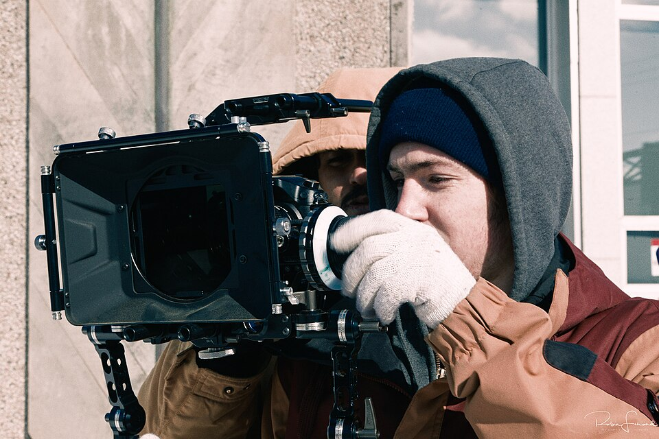

L'ÉTALONNEUR
La dernière main posée sur l'image avant que le spectateur ne la voie — celle qui décide, littéralement, de quelle couleur est l'émotion.
L'étalonneur ne "rend jolie" une image. Il finit de la raconter.
Chaque plan arrive du tournage avec ses propres écarts d'exposition et de teinte. L'étalonneur les unifie d'abord (correction), puis construit une intention par-dessus (grading) — c'est la différence entre nettoyer et peindre.
🎯 Ce qu'il corrige
Exposition, balance des blancs, cohérence d'un plan à l'autre — le travail invisible qui précède tout choix artistique.
🎨 Ce qu'il construit
Un look — une signature colorimétrique qui sert l'histoire, la temporalité, l'émotion de chaque scène.
👁️ Sa vraie compétence
Voir une image sans se laisser tromper par l'écran qu'il regarde — d'où l'usage systématique des scopes.
Neuf chapitres, de la correction au look final.
Que fait un étalonneur, vraiment
L'étalonneur est responsable de la dernière étape de raffinement de l'image — après le montage, avant la livraison finale. Il travaille en dialogue avec le réalisateur et la DP, jamais seul dans son coin.
- The Dark Knight — Stefan Sonnenfeld / Christopher Nolan (2008) : L'étalonneur Stefan Sonnenfeld a travaillé en dialogue direct avec le DP Wally Pfister pour construire deux palettes de couleurs distinctes dans le même film — bleus froids et acier pour Gotham/Batman, oranges et teintes chaudes pour les scènes de Harvey Dent/Le Joker. Cette décision colorimétrique renforçait la tension narrative sans dialogue.
- Moonlight — Alex Bickel / James Laxton (2016) : L'étalonneur a développé 3 palettes distinctes pour les 3 chapitres du film (enfance/adolescence/âge adulte) en dialogue avec le DP James Laxton. Le chapitre 1 utilise des teintures saturées chaudes, le chapitre 3 un look plus froid et désaturé — une évolution colorimétrique qui raconte le parcours de Chiron sans exposition.
- Saving Private Ryan — Janusz Kamiński (1998) : Kamiński et l'étalonneur ont collaboré avec Technicolor pour développer la technique de "silver retention" (ENR) qui retire de la couleur à l'impression tout en augmentant le contraste — un procédé chimique qui a donné au film son look désaturé et granuleux unique, impossible à reproduire numériquement à l'époque.
Regarde un film en pensant "couleur"
- Regarde 5 minutes d'un film en te concentrant uniquement sur la dominante colorimétrique de chaque scène.
- Note comment elle change selon le lieu ou l'émotion.
Correction vs grading
La correction répare (exposition, balance des blancs, cohérence entre plans). Le grading stylise (une intention artistique, un ton). On ne grade jamais avant d'avoir corrigé — sinon on stylise des erreurs.
- No Country for Old Men (Coens/Roger Deakins, 2007) — deux opérations distinctes sur le même matériau : la correction primaire a aligné 80 plans tournés par temps nuageux variable dans le Texas. Le grading créatif a ensuite désaturé les couleurs de 40% et poussé les ombres vers le brun-rouge pour évoquer un Ouest usé et sans pitié — une intention artistique impossible à appliquer avant que la correction technique ne soit terminée.
- Blade Runner 2049 (Roger Deakins/étalonneur Steve Scott, 2017) — 6 mois de tournage sur 3 continents : la correction a unifié un matériau extrêmement hétérogène. Le grading créatif a ensuite construit 5 palettes distinctes selon les environnements : orange pour les dunes de sable de Las Vegas, gris-bleu pour Los Angeles 2049, vert toxique pour San Diego dévasté. Ce travail de grading était impossible sans une correction préalable irréprochable.
- Parasite (Bong Joon-ho/étalonneur Kyung-min Han, 2019) — la correction invisible, le grading subliminal : la correction technique est entièrement transparente. Le grading différencie visuellement la maison Park (lumière chaude, blancs lumineux) de l'appartement Kim (teintes verdâtres, lumière artificielle) sans que le spectateur le conscientise — la frontière sociale est encodée dans la couleur.
Correction ou grading ?
- Classe : ajuster l'exposition sous-exposée, ajouter une dominante bleue nocturne, matcher deux plans tournés à des heures différentes, désaturer pour un flashback.
Lire une image avec les scopes
L'œil humain s'adapte et ment — un moniteur mal calibré ou une pièce trop lumineuse fausse tout jugement. Les scopes mesurent objectivement ce que l'écran affiche vraiment.
- DI (Digital Intermediate) — O Brother, Where Art Thou ? / Étalonneur Bob Fredrickson (2000) : Premier long métrage entièrement étalonné numériquement via DI, avec un moniteur de référence calibré à P3 D65. La calibration précise du moniteur Coen/Deakins était essentielle — c'est la première fois qu'une décision colorimétrique majeure (désaturation des verts du Mississippi pour un look sépia poussiéreux) a été prise entièrement en post, pas au tournage.
- The Dark Knight — Stefan Sonnenfeld (2008) : Sonnenfeld travaille systématiquement avec un waveform et un vectorscope en permanence sur son second écran. Lors des sessions avec Nolan, les scopes permettaient de valider que les différences entre les palettes "Gotham" et "Joker" restaient cohérentes entre les sessions d'étalonnage espacées de plusieurs semaines.
- Mad Max: Fury Road — Étalonnage "Day for Night" (2015) : Plusieurs séquences de nuit dans le film ont été tournées en plein jour et converties en post. Les scopes waveform permettaient à l'étalonneur de contrôler l'abaissement des hautes lumières et la saturation des ombres sans rendre l'image visuellement fausse — un travail de correction primaire extrêmement précis rendu possible uniquement par la mesure objective des scopes.
Réfléchis en données
- Sans regarder d'écran, écris ce qu'un waveform devrait montrer pour une scène de nuit très sombre versus une scène de plage en plein soleil.
La roue à trois voies

L'outil de base de tout étalonneur : trois roues qui contrôlent séparément les ombres (lift), les tons moyens (gamma) et les hautes lumières (gain) — en teinte et en luminosité à la fois.
- The Godfather (Gordon Willis et l'étalonneur, 1972) — la signature lift très sombre : le lift abaissé à -20 qui laisse les visages à moitié dans l'ombre était une décision sur la roue lift, maintenue plan par plan manuellement sur les 175 minutes du film. Cette signature — surnommée "le look Prince des Ténèbres" par la profession — venait entièrement d'un réglage lift radical et cohérent.
- Moonlight (Alex Bickel, 2016) — le chapitre 3 (Chiron adulte) : utilise un gamma abaissé de 15% avec un gain orienté vers le bleu-vert pour créer la palette nocturne froide de Miami adulte, distincte des chapitres 1 et 2. La roue gamma porte la personnalité émotionnelle du personnage devenu adulte — plus froide, plus distante.
- Mad Max : Fury Road — séquences "day for night" (2015) : lift abaissé de 60%, gamma converti vers le bleu froid, gain maintenu élevé pour conserver les détails dans les hautes lumières. L'action de nuit reste lisible grâce au gain préservé — si le gain avait été abaissé comme le lift, les cascades auraient été illisibles dans l'obscurité simulée.
Associe l'outil à l'intention
- Pour "assombrir une scène sans toucher aux visages", quelle roue utilises-tu en priorité ? Justifie.
Les LUTs
Un LUT (Look Up Table) est un raccourci de transformation colorimétrique. Un LUT créatif appliqué sur une image mal corrigée pousse les erreurs à l'extrême plutôt que de les cacher.
- Blade Runner 2049 (Roger Deakins, 2017) — une LUT créative développée avec Kodak : Deakins a développé une LUT créative sur mesure pour simuler le rendu argentique du Blade Runner original (1982, tourné en 35mm Panavision). Cette LUT a été appliquée en monitoring sur le tournage pour que Deakins voie en temps réel le look final — la LUT de monitoring ne touche pas les données RAW mais guide chaque décision d'éclairage.
- 1917 (Roger Deakins, 2020) — une LUT output technique pour les bougies : la LUT de sortie convertit la ARRI Alexa Mini LF Log-C vers Rec.709 en maintenant les hautes lumières dans les flares de bougies à un niveau précis. Une LUT technique sur mesure conçue avec l'étalonneur pour les scènes de nuit à la bougie de Pas-de-Calais — les bougies réelles saturent rapidement en capteur numérique, et la LUT output gère cette limite.
- La La Land (Linus Sandgren/étalonneur Tom Poole, 2016) — une LUT créative pour imiter le Technicolor 3-Strip : développée pour reproduire les comédies musicales américaines des années 50 — saturation poussée dans les primaires, peaux lumineuses, cieux vifs. Le résultat est délibérément "trop beau" pour ancrer le film dans l'esthétique de ses références historiques.
Remets les étapes dans l'ordre
- Remets dans l'ordre : appliquer un LUT créatif, corriger l'exposition, matcher les plans, appliquer un LUT d'entrée technique.
Le teal & orange
Le look "teal & orange" (ombres bleu-vert, peaux orangées) domine le cinéma commercial depuis 20 ans — parce que teal et orange sont complémentaires sur la roue chromatique, ce qui fait ressortir les visages sur n'importe quel fond. Bien utilisé, c'est un outil ; mal utilisé, c'est un pilote automatique paresseux.
- Mad Max : Fury Road (2015) — usage maîtrisé du teal & orange : orange pour les dunes et les peaux en plein soleil, teal uniquement dans les zones d'ombre et le ciel de nuit. Les deux couleurs ne sont jamais utilisées simultanément sur le même visage — cette règle de séparation spatiale transforme un cliché potentiel en choix narratif cohérent avec un monde de feu et d'ombre.
- Transformers (franchise Michael Bay, 2007–2017) — exemple académique d'usage excessif : teal dans les métaux des Transformers, orange partout ailleurs sur les personnages humains. L'absence de règle de séparation spatiale crée une saturation de complémentarité qui n'encode aucune information narrative — le teal & orange est devenu le fond plutôt que la figure.
- Edge of Tomorrow (étalonneur Natasha Leonnet, 2014) — grammaire colorimétrique narrative : le teal a été réservé aux exosquelettes militaires et aux environnements de combat, les oranges chauds aux flashbacks civils du personnage d'Emily Blunt. La palette différencie le monde de guerre du monde humain — chaque plan dit au spectateur dans quel espace narratif il se trouve.
Quand le teal & orange sert l'histoire
- Trouve un film d'action que tu connais avec ce look.
- Le choix sert-il l'histoire, ou est-ce un réflexe générique ? Justifie.
Matcher les plans
Deux plans de la même scène, tournés à des heures différentes ou avec des réglages caméra différents, doivent paraître filmés au même instant. C'est le travail le plus technique et le moins visible de l'étalonneur.
- The Revenant — Iñárritu / DP Emmanuel Lubezki (2015) : Tourné uniquement en lumière naturelle, la même scène pouvait être tournée sur plusieurs jours avec des conditions lumineuses radicalement différentes. Le matching inter-journée — relier des plans tournés par grand soleil avec des plans couverts — a représenté une partie majeure du travail d'étalonnage de Jaime Ugarte sur des centaines de plans.
- Moonlight — Alex Bickel / James Laxton (2016) : Certaines scènes du chapitre 3 (adulte) ont été tournées à Miami sous une lumière tropicale intense, d'autres à Atlanta en lumière artificielle. Le matching entre les deux environnements — tout en maintenant la cohérence de la palette froide du chapitre 3 — constitue un exemple de matching multi-sources complexe sur un budget de 1,5 M$.
- Mad Max: Fury Road — "Day for Night" (2015) : La conversion de séquences de jour en nuit en post impliquait un matching colorimétrique inverse — unifier des plans tournés dans des conditions de lumière identiques (plein soleil) pour qu'ils paraissent tournés la nuit, tout en restant cohérents entre eux. Le vectorscope était utilisé pour valider la cohérence de teinte plan par plan.
Chasse aux raccords ratés
- Trouve une scène où tu perçois un changement de teinte entre deux plans consécutifs — même léger.
Les tons chair

L'œil humain est extrêmement sensible aux couleurs de peau — une dérive de teinte à peine perceptible ailleurs devient immédiatement visible sur un visage. Le ton chair est toujours la première chose qu'on vérifie, quel que soit le style recherché.
- Moonlight — Alex Bickel (2016) : Les trois chapitres utilisent des palettes distinctes, mais dans chacun, les tons chair du personnage principal (Chiron, joué par trois acteurs différents) devaient rester dans une gamme naturellement cohérente. Le vectorscope était utilisé pour maintenir les tons chair dans la "skin tone line" standard, même lorsque les ombres et hautes lumières des scènes dérivaient vers des palettes très différentes.
- The Dark Knight — Stefan Sonnenfeld (2008) : Malgré les palettes opposées des deux univers narratifs, les tons chair de tous les personnages principaux étaient ancrés dans une gamme naturelle — garantissant que ni Batman ni le Joker ne paraissaient visuellement "malades" ou "irréels" malgré des décors aux dominantes très marquées.
- Saving Private Ryan — Janusz Kamiński (1998) : La technique ENR (silver retention) désature toute l'image, y compris les tons chair. Kamiński et l'étalonneur ont calibré précisément le niveau de désaturation peau pour maintenir une lisibilité émotionnelle des visages même dans les séquences de guerre les plus sombres.
Teste ta propre sensibilité
- Regarde deux photos très proches en teinte — l'une avec un léger décalage de peau, l'autre avec un décalage égal ailleurs dans l'image.
- Lequel remarques-tu en premier ?
Construire un look
Un look réussi se sent avant de se voir — voir la section « Approches » ci-dessous pour deux philosophies très différentes du grading.
- The Dark Knight — Stefan Sonnenfeld (2008) : Le look du film est construit autour d'une opposition chromatique narrative — bleus froids acier pour l'univers de Batman/Gotham, oranges chauds pour Harvey Dent et le Joker. Ce choix de look n'est pas décoratif : il exprime la dualité morale du film de façon colorimétrique. Sonnenfeld a développé ce look en session de travail avec Nolan plusieurs semaines avant le début de l'étalonnage.
- Moonlight — Barry Jenkins / Alex Bickel (2016) : Trois looks distincts pour trois chapitres — enfance (saturé, chaud, riche), adolescence (contrasté, plus dur), âge adulte (froid, désaturé, distant). Chaque palette a été définie en référence à des peintures spécifiques que Jenkins avait partagées avec le DP Laxton et l'étalonneur avant le tournage.
- Mad Max: Fury Road — Miller / DP John Seale (2015) : Le look général du film — désaturé, contrasté, avec des ciels presque brûlés et des ombres profondes — a été défini par Miller avec Seale dès la préproduction via des références visuelles. L'étalonneur a traduit ces références en paramètres DaVinci Resolve applicables plan par plan sur 120 jours de matière brute.
Décris un look en 3 adjectifs
- Choisis 3 adjectifs pour décrire une ambiance colorimétrique que tu aimerais créer, sans nommer aucune couleur précise.
- Traduis-les ensuite en choix concrets sur les trois roues.
Deux philosophies du grading.
Le grading corrige sans se faire remarquer — l'objectif est que le spectateur ne pense jamais "on a colorisé cette image".
Le grading devient une part reconnaissable du style du film ou du réalisateur — une palette qu'on associe immédiatement à une œuvre.
Bibliographie et ressources.
Le petit quiz de fin de parcours.
NIVEAU 1 — BASES1. Que fait-on toujours avant le grading creatif ?
NIVEAU 1 — BASES2. L'etalonneur intervient :
NIVEAU 2 — APPLICATION3. La roue «gamma» controle principalement :
NIVEAU 2 — APPLICATION4. Un LUT creatif applique sur une image mal corrigee :
NIVEAU 3 — ANALYSE5. Pourquoi le teal & orange fonctionne-t-il visuellement ?
NIVEAU 3 — ANALYSE6. Pourquoi les tons chair sont-ils toujours verifies en priorite, quel que soit le style recherche ?
NIVEAU 4 — EXPERT7. Quelle est la difference entre le naturalisme et le style affirme en grading ?
NIVEAU 4 — EXPERT8. Pourquoi «matcher les plans» est-il considere comme le travail le plus technique et le moins visible de l'etalonneur ?
NIVEAU 5 — MAÎTRISE9. Pourquoi la verification des tons chair et le matching de plans relevent-ils de la meme exigence de continuite ?
NIVEAU 5 — MAÎTRISE10. En quoi le choix entre naturalisme et style affirme depend-il de la meme logique que l'usage du teal & orange ?